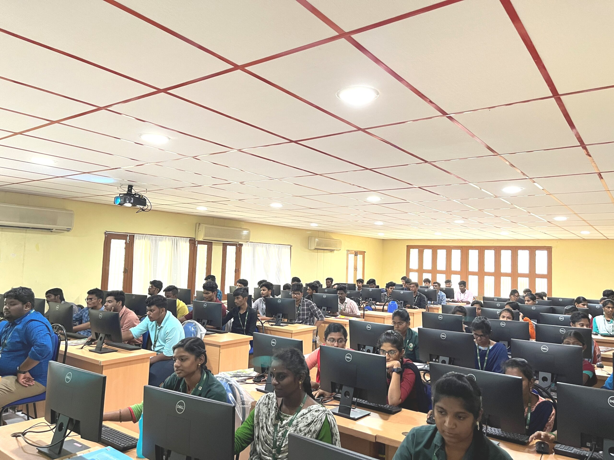

Project Lab

Department of Computer Science and Engineering was established in the year 1999 with a goal of creating ethically responsible and self-reliant technocrats. The department offers a four year UG degree program in Computer Science and Engineering with an annual intake of 120 students, two year PG degree program in Computer Science and Engineering with an annual intake of 18 students. CSE department has the significant infra structural facilities with well-equipped laboratories and hi-tech state of art networked computers with high speed internet facility. The department is gifted with a team of 28 qualified and experienced faculty members who are here to guide the students in all the aspects. Our department is Accredited by National Board of Accreditation (NBA), New Delhi since May 2009 onwards.
To impart holistic education in Computer Science and Engineering to cater the needs in academia, industry and society.
Offering under graduate and post graduate programmes by providing effective and balanced curriculum and equip themselves to gear up to the ethical challenges awaiting them. To confer continuous activities in technical and research that will enable the students to face the real time challenges in the field of Computer Science and Engineering. To provide training for the students in a socially responsible manner with inculcating integrity and human values.
PEO1: Lead a professional career by acquiring the basic knowledge in the field of specialization and allied Engineering.
PEO2: Assess the real life problems and deal with them confidently relevance to the society.
PEO3: Engage in lifelong learning by pursuing higher studies and participating in professional organizations.
PEO4: Exhibit interpersonal skills and able to work as a team for success.
PO1 Engineering Knowledge: Apply the knowledge of mathematics, science, engineering fundamentals, and an engineering specialization to the solution of complex engineering problems.
PO2 Problem Analysis: Identify, formulate, review research literature, and analyze complex engineering problems reaching substantiated conclusions using first principles of mathematics, natural sciences, and engineering sciences.
PO3 Design / Development of Solutions: Design solutions for complex engineering problems and design system components or processes that meet the specified needs with appropriate consideration for the public health and safety, and the cultural, societal, and environmental considerations.
PO4 Conduct Investigations of Complex Problems: Use research-based knowledge and research methods including design of experiments, analysis and interpretation of data, and synthesis of the information to provide valid conclusions.
PO5 Modern Tool Usage: Create, select, and apply appropriate techniques, resources, and modern engineering and IT tools including prediction and modeling to complex engineering activities with an understanding of the limitations.
PO6 The Engineer and Society: Apply reasoning informed by the contextual knowledge to assess societal, health, safety, legal and cultural issues and the consequent responsibilities relevant to the professional engineering practice.
PO7 Environment and Sustainability: Understand the impact of the professional engineering solutions in societal and environmental contexts, and demonstrate the knowledge of, and need for sustainable development.
PO8 Ethics: Apply ethical principles and commit to professional ethics and responsibilities and norms of the engineering practice.
PO9 Individual and Team Work: Function effectively as an individual, and as a member or leader in diverse teams, and in multidisciplinary settings.
PO10 Communication: Communicate effectively on complex engineering activities with the engineering community and with society at large, such as, being able to comprehend and write effective reports and design documentation, make effective presentations, and give and receive clear instructions.
PO11 Project Management and Finance: Demonstrate knowledge and understanding of the engineering and management principles and apply these to one’s own work, as a member and leader in a team, to manage projects and in multidisciplinary environments.
PO12 Life-long Learning: Recognize the need for, and have the preparation and ability to engage in independent and life-long learning in the broadest context of technological change.
PSO1: Design, implement, test and evaluate a computer system, component, or algorithm to meet desired needs and to solve a computational problem.
PSO2: The ability to understand, analyse and develop computer programs in the areas related to algorithms, system software, multimedia, web design, big data analytics and networking for efficient design of computer-based systems of varying complexity.
PSO3: The ability to apply standard practices and strategies in software project development using open-ended programming environments to deliver a quality product.
PSO4: Ability to use knowledge in various domains to identify research gaps and hence to provide solutions, new ideas and innovations.
The Department has well equipped Air conditioned laboratories with various softwares and equipments relevant to the industry standards.The following laboratories are associated with CSE department.
The Department of Computer Science and Engineering is well equipped with adequate facilities viz. class rooms with visual teaching aids, air-conditioned seminar hall, a separate department library and laboratories.